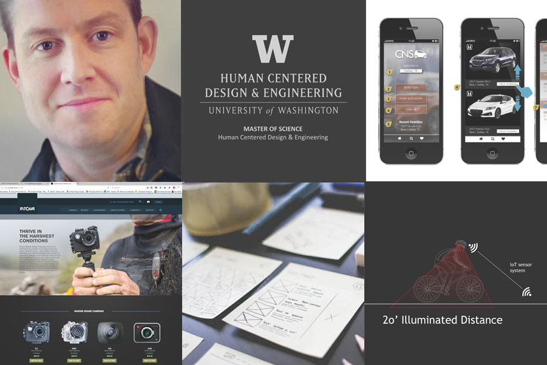

Hi, I'm Jami - I solve problems through design.

I am employed at BECU as a Senior UX designer. I enjoy making physical artifacts! Why? Because UX is often thought of as technology and pixels and that constrains our creative thinking. User-centered physical fabrication challenges us to consider wearables, helmets, even IOT casings to meet our users' needs. Also - hands-on activities are fun!
As a peer teacher, I can offer help in the following:
- Vector design (Illustrator)
- 3D Modeling (Rhino))
- Vinyl plotter operation
- DXF file preparation
- Basic HTML